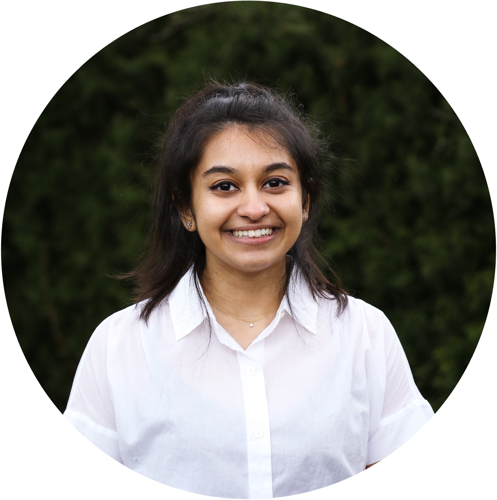
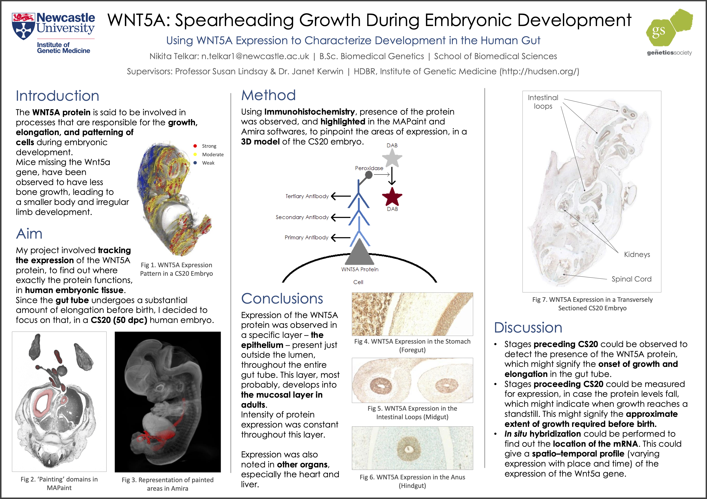

Nikita Telkar, MSc
Investigating genetic regulation in the human placenta, while sipping on my flat white.
Big fan ofggplot2and Jazz music. Jack-of-all-Trades kinda person
About Me
A 3rd year PhD Candidate in the Medical Genetics Graduate Program at The University of British Columbia, I currently reside in the lovely and vibrant city of Vancouver in British Columbia, Canada.
My research interests lie in developmental, cardiovascular, and population genetics. My curiosity is driven by wanting to elucidate the genetic differences that exist between populations of different ancestries.
I’m an avid bibliophile, coffee enthusiast, and culinary aficionado. I also make and sell custom genetics-themed graphics and merchandise on Etsy!
| | | | Google Scholar

Skills
Research Background: Genomics and bioinformatics - cardiovascular genetics, developmental/embryonic genetics, epidemiology, lung and liver cancer, RNA, biostatistics
Programming: R, Linux/BASH, HPC, Git/GitHub, Jupyter
Databases: NCBI, OMIM, GEO, UCSC Genome Browser, ClinVar, GeneCards, UniProt, GTex, miRBase, RNACentral
Genomics Analysis Tools: IGV, PLINK, GEMMA, miRMaster
Data Types: GWAS Summary Statistics/SNP, RNA sequencing (total and small), single-cell RNA sequencing (scRNA-seq), DNA methylation (850/450K)
Education
PhD in Medical Genetics
University of British Columbia, Canada
(2019 - )
Thesis Project: Characterizing small non-coding RNAs in the Human Placenta.
Dr. Wendy Robinson - BC Children’s Hospital Research Institute | Lab Website
Dr. Wan Lam - BC Cancer Research Centre | Lab Website
Publications / Awards / Communications
Awards:
Virtual Knowledge Exchange Grant 2021 – BC Children’s Hospital Research Institute
4 Year Doctoral Fellowship (4YF) Award (2020-2024) – University of British Columbia
President’s Academic Excellence Initiative PhD Award (2020-2024) – University of British Columbia
International Tuition Award (2019-2024) – University of British Columbia
Pubs:
Martinez, V.D., Cohn D.E., Telkar N, Minatel B.C., Pewarchuk M.E., Marshall, E.A., Price M.E., Robinson W.P., Lam W.L. Profiling the Small Non-Coding RNA Transcriptome of the Human Placenta.. Sci Data 2021; 8, 166.
Cohn D.E., Barros-Filho M.C., Minatel B.C., Pewarchuk M.E., Marshall, E.A., Vucic E.A., Sage A.P., Telkar N, Stewart G.L., Jurisica I, Reis P.P., Robinson W.P, Lam W.L. Reactivation of multiple fetal miRNAs in lung adenocarcinoma. Cancers 2021, 13, 2686.
Marshall EA, Telkar N, Lam WL. Functional role of the cancer microbiome in the solid tumour niche. Current Research in Immunology 2021; 2: 1–6
Rees W.D., Telkar N, Lin D, Peloni C, Fathi A, Kobor M, Zachos N, Steiner T. An in vitro chronic damage model impairs inflammatory and regenerative responses in human colonoid monolayers. [Submitted]
Poster Example

MSc in Genetics of Human Disease
University College London, London, England
Wellcome Sanger Institute, Cambridge, London
(2017 - 2018)
Dissertation: Comparing the Genetic Architecture of Lipid Traits between Populations
Supervisor: Dr. Karoline Kuchenbaecker
Publications / Awards / Communications:
Kuchenbaecker K, Telkar N, Reiker T, et al. The transferability of lipid loci across African, Asian and European cohorts. Nature Communications, 2019; 10: 4330.
Polygenics Risk Scores published on EMBL-EBI’s PGS Catalog
BSc in Biomedical Genetics
University of Newcastle upon Tyne, England
(2014 -2017)
Dissertation: Genome-wide RNAi Screening to identify new genes involved in Mitochondrial Disease
Publications / Awards / Communications
Awards:
Genes and Development Summer Studentship 2016 – The Genetics Society UK
Faculty of Medical Sciences Undergraduate Research Scholarship 2016 – Newcastle University
Commendation Award – Newcastle University Student Research Scholarships and Expeditions 2016
Second Place Poster Award 2016 – Newcastle University Faculty of Medicine
ncl+ Award – Newcastle University (for extracurricular achievement)
{kind=link}
Pubs:
Telkar N. Using WNT5A Expression to Characterize Development in the Human Gut. The Genetics Society News Newsletter, January 2017, Issue 76.
Poster Example

Academic and Professional Experience
Biostatistics Expert
BC Children’s Hospital Research Institute, Vancouver, Canada (Jan - June 2021)
- Developed open access videos and resources focused on the statistical terms, concepts, and analyses undertaken in health research at all educational levels (beginner, intermediate and advanced) for the BCCHR 2021 Summer Student Research Program.
- Coded and designed an Introduction to Biomedical Data Analysis in R tutorial
- Videos available on the BCCHR website.
Biosciences Administration Assistant
Department of Neuroscience, University College London (Nov 2017 - Jan 2018)
- Responsible for sorting and filing a large amount of incoming PhD applications
Owner
ScribblezbyNiki (June 2021 - )
- Designing genetics/science-inspired merchandise sold on Etsy
- Each order has received 5-star reviews
Founder
SPIRITFUL (April - September 2019)
- Started a business selling original artwork, handling all workflow from procuring raw material, assembly, marketing, to shipping
- 60% profit margin, 25% of profits directed to the HelpAge India NGO - a non-profit focused on the elderly
Leadership Initiatives
Co-Chair
Trainee Omics Group (TOG) Committee, BC Children’s Hospital Research Institute (September 2021 - Present)
- A graduate trainee-led bioinformatics and data analysis support group teaching and guiding students/trainees in statistical analyses and methodologies undertaken in biomedical/health research
- Co-ordinator (December 2020 - September 2021): Exclusively created (coded) and taught RNA-seq genomic data analysis workshop
Advisory Committee Member
Department of Medical Genetics, UBC (2019 – Present)
- Part of the Advisory Committee for the Department of Medical Genetics
- Singlehandedly redesigned and updated the department website using WordPress with CSS and HTML
Executive Consultant
UBC Medical Genetics Graduate Student Association (January 2021 – Present)
- Assisting the board with executive decisions and planning events at this departmental social and outreach association
- Recruited panelists and moderated the Alumni Panel at the annual welcome event (received public acknowledgment), directed a fundraiser (raised ~$300), developed the website
Volunteer
Geneskool, Genome British Columbia (October 2019 – October 2020)
- Conducted in-person interactive activities focused on introducing and educating students (ages 10-12) about genetics and its applications at local schools in Vancouver
- Committee Member at the Girls and STEAM Symposium 2019 hosted by BC Science World
Research Mentor
Newcastle University and UBC (2015 – 2016 / 2020 – Present)
- Guiding and assisting incoming graduate students, both professionally and personally
- Aiding in formulating research questions, analysis methodologies, and interpretation of data
Vice President
Newcastle South Asian Society (2016 – 2017)
- Second-in-charge in this cultural society committee and responsible for delegating and supervising tasks
- Oversaw event management – Corresponding with services and sponsors, locating venues, recording inventory, maintaining finances
- Events arranged for up to 20 to 500 guests
- Publicity Officer (2015 – 2016) – Management of all social media accounts of the committee, main email correspondent, digitization of all posters and tickets.
Teaching
Teaching Assistant
University of British Columbia, Canada (Sept - Dec 2020)
- TA for the graduate MEDG 520 Advanced Human Molecular Genetics course in the Department of Medical Genetics.
- Instrumental in restructuring the course and assignment format for the year
- Facilitated in transitioning this in-person, discussion-based course to a virtual environment (chose the platform for teaching and guided instructors through its usage)
- Held real-time online tutorials on topics most requested by the students (as well as one-on-one meetings and discussions)
- Named
the best TA he's ever worked withby the Head of the Medical Genetics Graduate Program : “Nikita always responded promptly and thoughtfully to requests for advice. Her input and assistance helped guide the learning process. She did everything I think a good teacher should, and went above and beyond the time and effort I would expect from a TA. She was the best part of the course.”
Visiting Scholar
MIT-ADT School of Bioengineering Sciences and Research, Pune, India (Feb - July 2019)
- Invited Visiting Lecturer (3 lectures) in Genetics for the Bachelor of Technology-Bioengineering undergraduate program
RNA-seq Workshop Lead
Trainee Omics Group (TOG) Committee, BC Children’s Hospital Research Institute (September 2021 - Present)
- Designed, coded, and taught a 2-part RNA-seq Workshop detailing all steps from raw sequence alignment to gene/pathway enrichment
- Invited to run the above workshop for BC Cancer Research Centre Graduate Student and Post Doctoral Society (GrasPods)
- YouTube Videos: Part 1 and Part 2
- Honoraria received